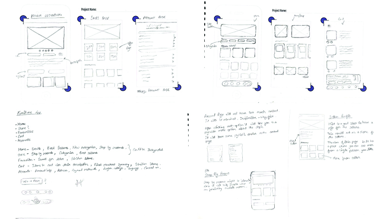
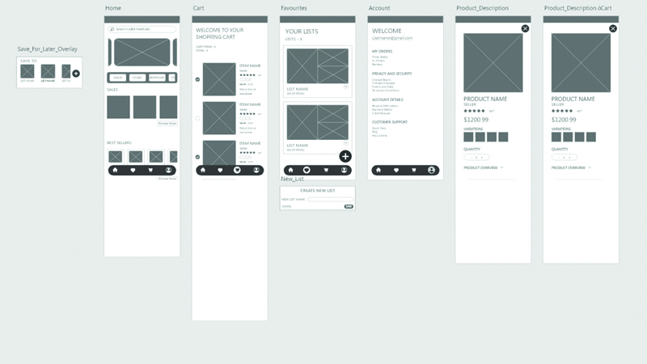
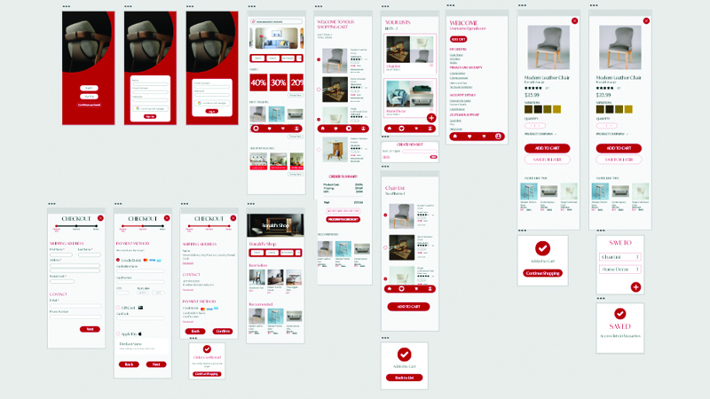

Humber Fruniture UI Design
Karthik | 2023
The aim of this project was to create aN E-commerce native ios application for students in Industrial design program, to showcase the furniture and items that they built. With a focus on showcasing the furniture and items crafted by these students, the app serves as a platform for them to exhibit their creations and gain valuable exposure within the industry.

User Research
Although the app would help students, I decided to approach it in a way that would satisfy the customers who are on the app. I realised that the customers will most probably not be students but are more likely going to be people who want to support these students. I started off by identifying the target audience and creating a User Persona for them. A competitor analysis was then conducted to help understand what other brands are doing wrong or right. SWOT analysis also took place to help understand the weakness and strengths of these competing apps to help identify what I need to add or avoid to the Humber Furnitures app. With the ideation out of the way it was time to move onto the next step.
App Ideation
The research segment was a good starting point as it already helps plant certain ideas into your head before the actual ideation process starts. The ideation involved making multiple sketches to make sure I know what the layout of the app should be. Furthermore, to continue the ideation process, a style tile was required to be created to understand the aesthetics of the app. The app not only required to be user friendly but also aesthetically pleasing.
User Testing
After conducting thorough user research and brainstorming ideas for the Humber Furnitures app, I embarked on the pivotal phase of developing a low-fidelity prototype. This involved sketching multiple iterations to define the app's layout and user flow. Moving forward, I translated these concepts into a basic prototype, incorporating clickable elements which was then used for user testing. This method was crucial to understand if the user flow works and if there are any misunderstandings amongst users while navigating the app. This collaborative process ensured that the app not only meets user needs but also provides a smooth and enjoyable experience.
High Fidelity Prototype
After refining the low-fidelity prototype based on user feedback and testing, I proceeded to develop the high-fidelity version of the Humber Furnitures app. This phase involved adding more details and interactions to bring the app to life. I implemented features such as the sign-up process, essential e-commerce home pages, and the step-by-step process of purchasing items from the cart to checkout. Each step was carefully designed with user experience in mind, ensuring seamless navigation and a pleasant interaction flow. This was one of the final steps of the project which resulted in the Native iOS application for industry design students. The Humber Furnitures app brings together great design and practical features, providing students a platform to showcase their work and users an easy shopping experience. It's a seamless blend of style and functionality, making it convenient for everyone involved.